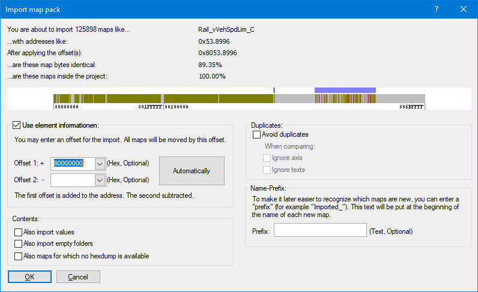

|
The command import map pack (Menu Project) |

  
|
|
The command import map pack (Menu Project) |
|

This command will import all maps (but not the data inside the maps) from a (previously created by an export process) map pack file.
At the top you can see some sample addresses from the imported file next to the number of maps. Directly below you can see how your offset changes the addresses and how plausible the result is. The bitmap shows an overview of the target project, including element addresses. The blue markers show where the maps will end up.
2 offsets:
You can enter up to 2 offsets. Both will be offset against the address during import. This makes it easier to subtract an offset and add a new offset if the situation requires it. For example, to move a map from 0x7000 to 0x400000 enter "0x7000" as offset 2 and "0x400000" for offset 1.
Find out the offset:
| · | Use the "Automatically" button |
| · | Look at the addresses of the maps (second line) and compare them with the element addresses in the image. This will give you a hint in which range the offset must be. |
| · | Click with the left or right mouse button in the image to try different offsets. (You can also hold the mouse button pressed.) |
| · | Sometimes there is no offset that fits all. In this case use the function Import changes. |
This is just one of several options to import data from other projects.
Shortcuts
| Symbol bar: | - |
| Keyboard: | - |